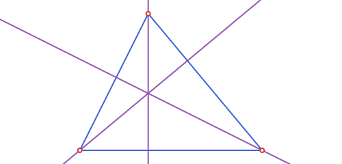
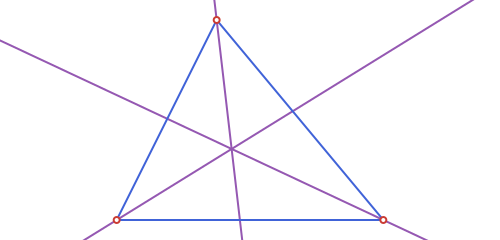
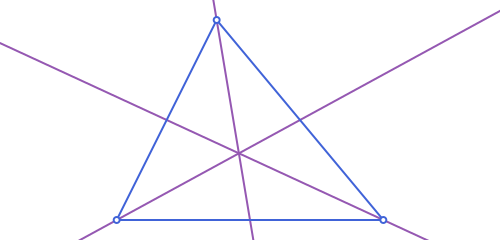
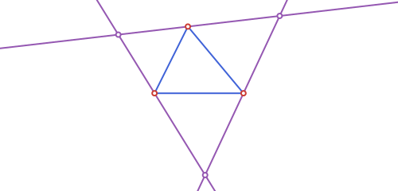
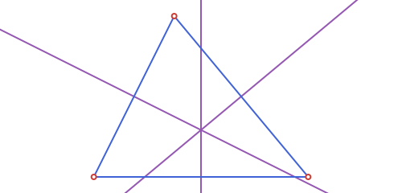
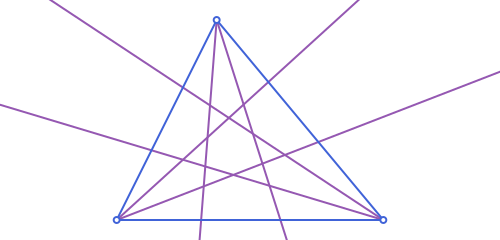

Triangles: Vertex-Indexed Lines
The running example, the scalene triangle used throughout this page:
using Apollonius
A, B, C = APPoint(0.0, 0.0), APPoint(8.0, 0.0), APPoint(3.0, 6.0)
t = APTriangle(A, B, C)Vertex-indexed lines
Four of the classical triangle lines (the altitude, median, and internal and external angle bisectors) plus the perpendicular bisector of the opposite side and the angle trisectors, all come in threes, one per vertex. Rather than one function per vertex, each is a single function taking the triangle and a vertex index i ∈ {1,2,3}:
| Function | The line through t[i]... |
|---|---|
altitude(t, i) | ...perpendicular to the opposite side (concurs at orthocenter) |
median(t, i) | ...through the opposite side's midpoint (concurs at centroid) |
bisector(t, i) | ...the internal angle bisector (concurs at incenter) |
bisector_ext(t, i) | ...the external angle bisector (perpendicular to bisector(t, i)) |
mediator(t, i) | the perpendicular bisector of the side opposite t[i] (concurs at circumcenter) |
trisector(t, i) | the 2 rays from t[i] trisecting the interior angle there |
altitude(t, 1), median(t, 1), bisector(t, 1)(APLine([0.0, 0.0] -> [-6.0, -5.0]), APLine([0.0, 0.0] -> [5.5, 3.0]), APLine([0.0, 0.0] -> [1.4472135954999579, 0.8944271909999159]))altitude.(t, 1:3)3-element Vector{APLine{2, Float64}}:
APLine([0.0, 0.0] -> [-6.0, -5.0])
APLine([8.0, 0.0] -> [2.0, 3.0])
APLine([3.0, 6.0] -> [3.0, 14.0])
bisector.(t, 1:3)3-element Vector{APLine{2, Float64}}:
APLine([0.0, 0.0] -> [1.4472135954999579, 0.8944271909999159])
APLine([8.0, 0.0] -> [6.35981560033552, 0.7682212795973759])
APLine([3.0, 6.0] -> [3.192970804164522, 4.337351529402708])
median.(t, 1:3)3-element Vector{APLine{2, Float64}}:
APLine([0.0, 0.0] -> [5.5, 3.0])
APLine([8.0, 0.0] -> [1.5, 3.0])
APLine([3.0, 6.0] -> [4.0, 0.0])
is_on_line(orthocenter(t), altitude(t, 1)), is_on_line(centroid(t), median(t, 1)), is_on_line(incenter(t), bisector(t, 1))(true, true, true)bisector_ext(t, i) and mediator(t, i) complete the set. The external bisector is always perpendicular to the internal one at the same vertex, and the mediator (the perpendicular bisector of the opposite side) is what all three concur at to give the circumcenter:
is_perpendicular(bisector(t, 1), bisector_ext(t, 1))trueis_on_line(circumcenter(t), mediator(t, 1)), is_on_line(circumcenter(t), mediator(t, 2)), is_on_line(circumcenter(t), mediator(t, 3))(true, true, true)bisector_ext.(t, 1:3)3-element Vector{APLine{2, Float64}}:
APLine([0.0, 0.0] -> [-0.8944271909999159, 1.4472135954999579])
APLine([8.0, 0.0] -> [7.231778720402624, -1.6401843996644798])
APLine([3.0, 6.0] -> [4.662648470597292, 6.192970804164522])
mediator.(t, 1:3)3-element Vector{APLine{2, Float64}}:
APLine([5.5, 3.0] -> [-0.5, -2.0])
APLine([1.5, 3.0] -> [-4.5, 6.0])
APLine([4.0, 0.0] -> [4.0, 8.0])
The free function angle_trisectors(vertex, p1, p2) (see Angles on the previous page) is what trisector(t, i) is built from; use it directly when the two rays don't come from a triangle's own vertices.
trisector.(t, 1:3)3-element Vector{Tuple{APRay{2, Float64}, APRay{2, Float64}}}:
(APRay([0.0, 0.0] -> [7.461364909427866, 2.8858332745254875]), APRay([0.0, 0.0] -> [5.917991577910375, 5.383063782250947]))
(APRay([8.0, 0.0] -> [0.3386841242283847, 2.303093365812555]), APRay([8.0, 0.0] -> [1.3260597629124513, 4.411181441721003]))
(APRay([3.0, 6.0] -> [2.480507522846098, -0.6880585797509653]), APRay([3.0, 6.0] -> [5.0375113771053375, -0.3912868335074995]))